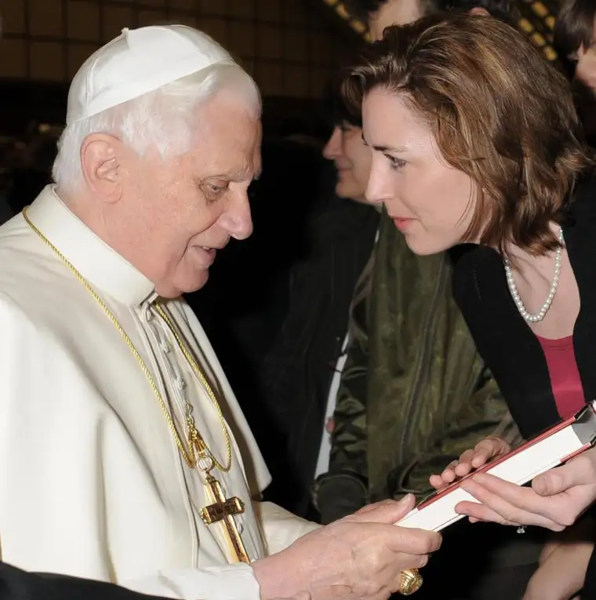
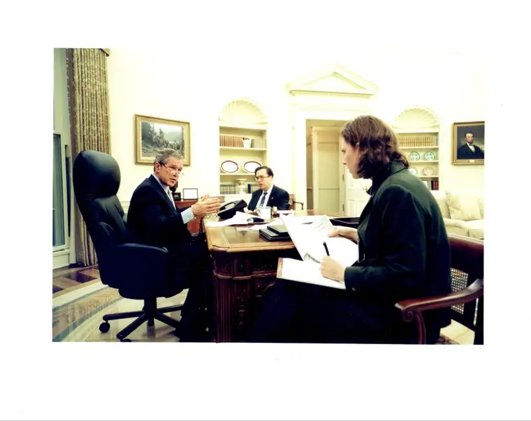

FARGO — When planning the upcoming “Beloved Daughter” women’s conference, Jennie Korsmo says the hope is to provide a beautiful, nourishing atmosphere for weary women.
“We wanted to make a way for them to pamper themselves, to take a break from worrying about feeding the kids or husband or the next 10 things on their plate,” says Korsmo, marriage preparation coordinator for the Diocese of Fargo, which is hosting the March 11 event. “It’s a day for them to be a little bit pampered, a little bit spoiled and to focus on their relationships with each other, and with Christ.”
The conference is open to all women of the area, ages 14 and older, Korsmo says, and includes lunch.
Presentations will be geared around Isaiah 43:1B: “Do not fear, for I have redeemed you; I have called you by name: you are mine.”
Included will be keynote Colleen Carroll Campbell, former speechwriter for President George W. Bush and Eternal World Television Network (EWTN) news anchor.
She will focus on her best-selling book, “My Sisters the Saints,” a memoir exploring coming to terms with her father’s Alzheimer’s, initial infertility and the spiritual women who led her through dark times into light.
Campbell answered a few questions about working for a president, meeting a pope and what she plans to share with the women of North Dakota.

Q: Can you share a highlight of your time working for a president and how that has informed your life since?
A: The most memorable moments of working in the White House were, of course, those I spent working directly with the president. It was a great honor to shape his message and write the words he would speak on issues I cared about, from education and the faith-based initiative to judicial appointments and the global fight against AIDS.
You also see the crucial importance of prudence and humility in our elected officials. George W. Bush made his share of mistakes, but I always found him to be sincere in his desire to do right by the American people and surprisingly down-to-earth. I think most presidents leave office humbler than when they entered, and that’s a good thing.
Q: What was it like to be part of announcing a new pope? What do you think his most important message is for us today?
A: It was a thrill to be anchoring in Rome during the historic transition between Benedict XVI and Francis. It was especially memorable for our family, since my husband and children were able to join me for the trip. They experienced so many once-in-a-lifetime moments there, and of course, none of us will forget where we were when the white smoke went up.
To be able to announce the new pope to viewers around the world, while knowing my husband and children were below in St. Peter’s Square in the midst of the swarms of people streaming in to see him step out on that balcony, was a great gift.
Every pope has his message; I think the emphasis we see in Pope Francis on the poor and marginalized is his most powerful one. It’s easy to forget, when keeping up with the Joneses in America, how very much we have in terms of material wealth.
Pope Francis is constantly reminding us of those who have less, and our duty to watch for them, reach out to them and learn from them about the radical simplicity to which Jesus is calling all of us, in one way or another.
He’s challenging us to raise our children to realize the world doesn’t revolve around them, that being a Christian is about being in communion with the weak and the outcast. This isn’t a new message, but it’s easy to forget, so those reminders are welcome.
Q: What will you be sharing with the women of North Dakota?
A: My talks will focus on how the wisdom of the female saints applies to the questions we modern women are grappling with every day — from struggles with work-life balance to the cultural pressure to do-it-all and have-it-all to the burdens of caring for aging parents alongside growing children.
We often think of the women saints as little more than plaster-of-Paris statues, a bunch of goody-two-shoes who can’t relate to what we’re going through. But when you look at their lives and writings you discover flesh-and-blood women who faced many of the same trials and temptations we do, albeit in different times and circumstances.
When we tune out the messages of our selfie-obsessed pop culture and listen instead to these wise and holy women, we discover a liberating truth: who we are matters far more than how we look or what we do or what we own. And we cannot fully know who we are without reference to the God who created us in His image, who created us for love.
Once we do know that, though — once we’ve discovered that our deepest identity is rooted in something more durable and transcendent than the roles we play or the deeds we do — we find the freedom to look at our lives in a new way. We realize we can let some things go in order to reach out for others.
IF YOU GO
What: “Beloved Daughter” Redeemed women’s conference
When: 8 a.m. to 6:30 p.m., Saturday, March 11
Where: Holiday Inn, 3803 13th Ave. S., Fargo
Cost: $35, includes lunch; girls 14 to 17 free with adult if registered. www.fargodiocese.org/redeemedwomen
[For the sake of having a repository for my newspaper columns and articles, I reprint them here, with permission, a week after their run date. The preceding ran in The Forum newspaper on Feb. 25, 2017.]